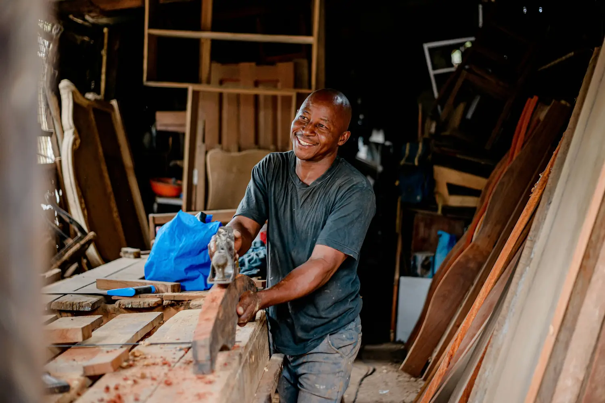
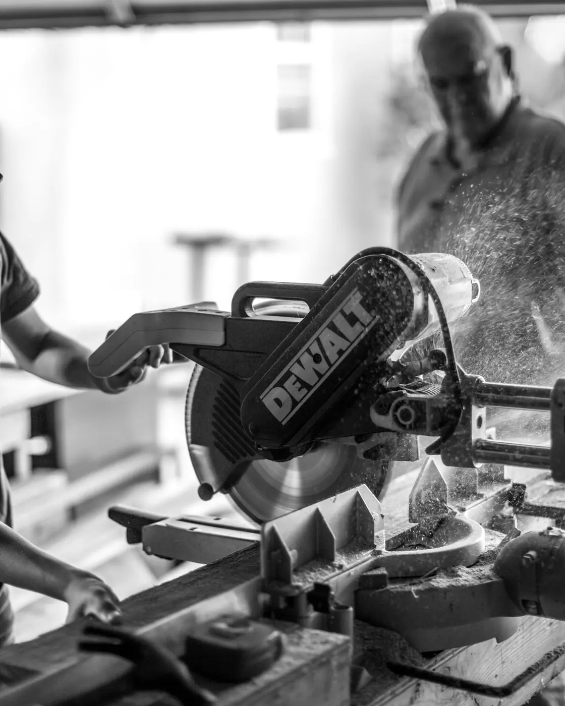
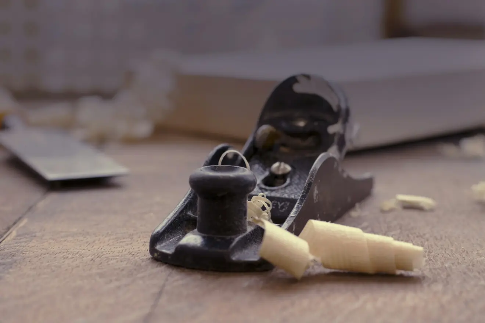
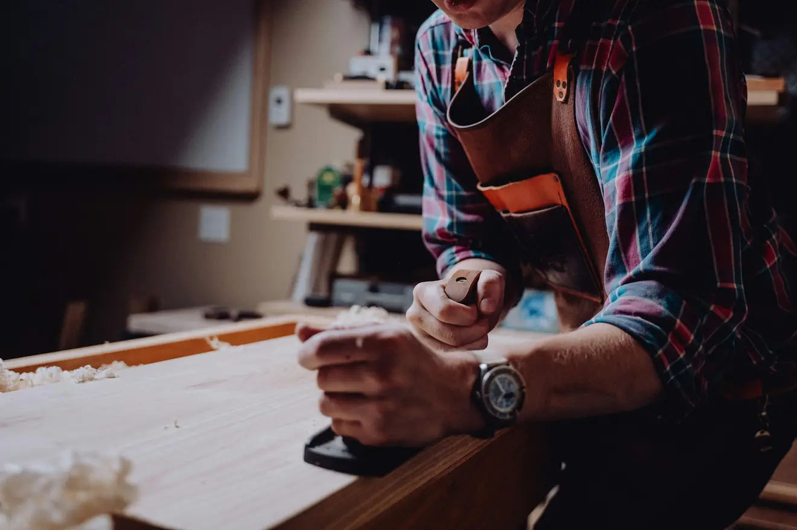

Meisterbetrieb seit 1998 · Peine
Gebaut für den Raum,
in dem es stehen soll.
Möbel nach Maß, Innenausbau und Restaurierung. Wir messen vor Ort, zeichnen, und bauen erst dann.

Vom Brett zum Möbel.
Sieben Schritte, immer dieselben. Scrollen Sie weiter — der Ablauf läuft mit.
Was wir machen
Jedes Maß wird vor Ort genommen.
Altbauwände sind selten gerade. Was im Katalog passt, passt im Zimmer oft nicht. Deshalb steht am Anfang immer ein Termin bei Ihnen, nicht ein Prospekt.
Der Betrieb in Zahlen
- Im Handwerk
- 27
- Mitarbeiter
- 6
- Werkstatt
- 420 m²
In der Werkstatt

ZuschnittGehrungssäge

HandarbeitHobel und Beitel

AbbundAusrichten vor dem Verleimen
Material
Holz, das wir selbst aussuchen.
Fahren Sie über ein Feld, um die Holzart zu sehen.
Arbeiten
Zuletzt gebaut
Alle ProjekteDie Schräge im Schlafzimmer hat vorher zwölf Jahre lang niemand nutzen können. Jetzt steht da ein Schrank, der aussieht, als wäre das Haus um ihn herum gebaut worden.